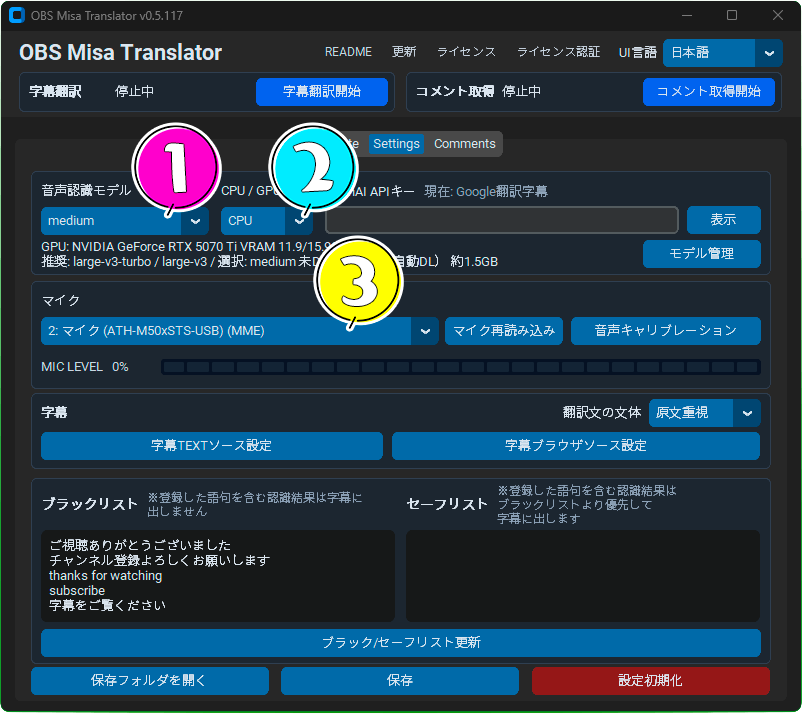
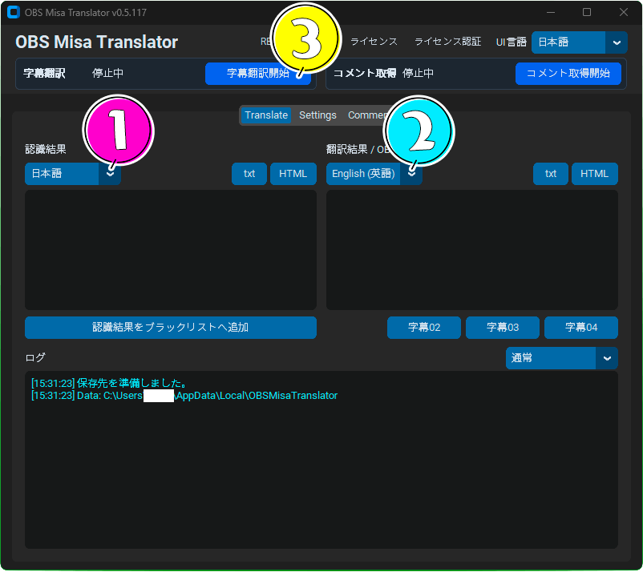
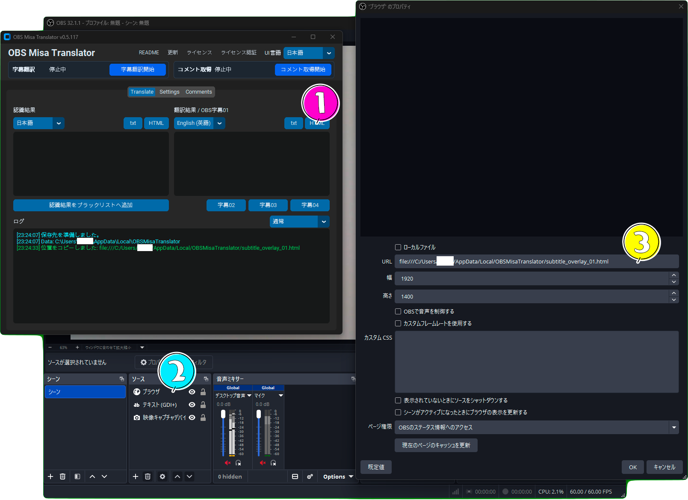
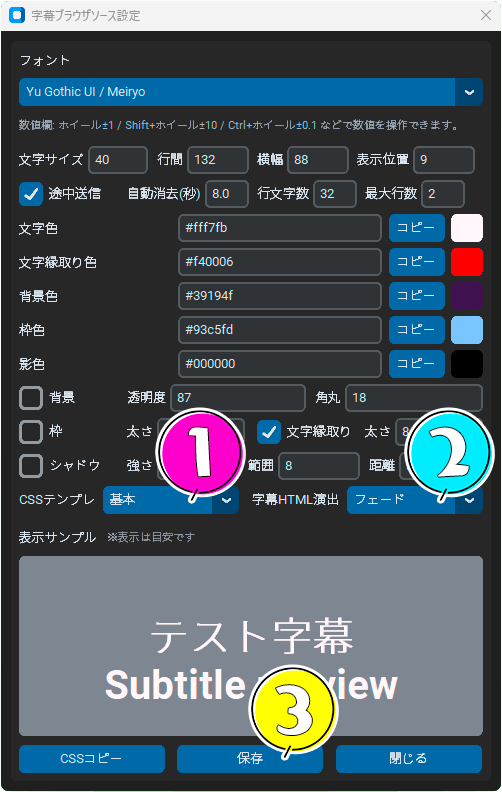
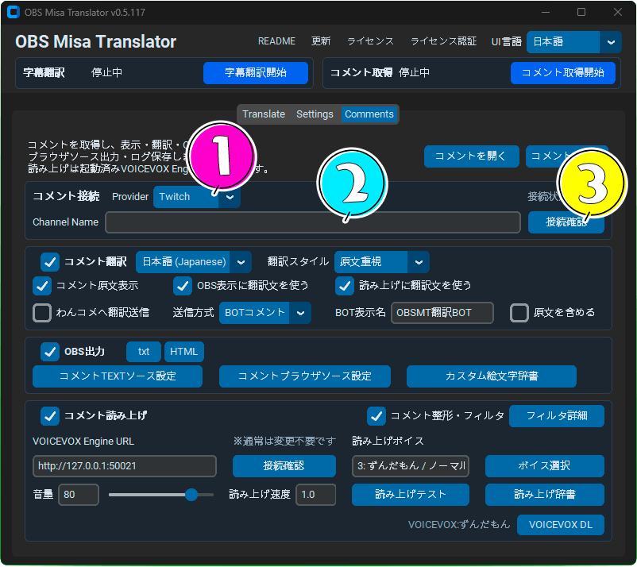
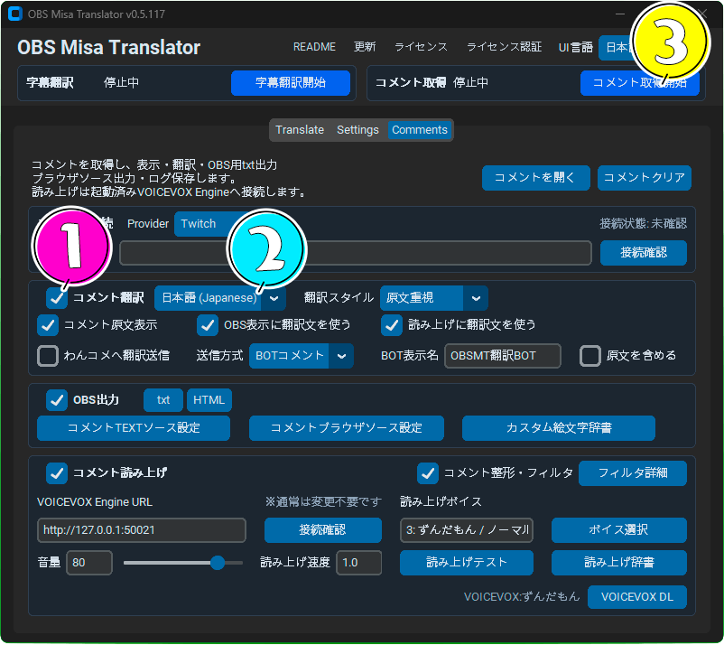
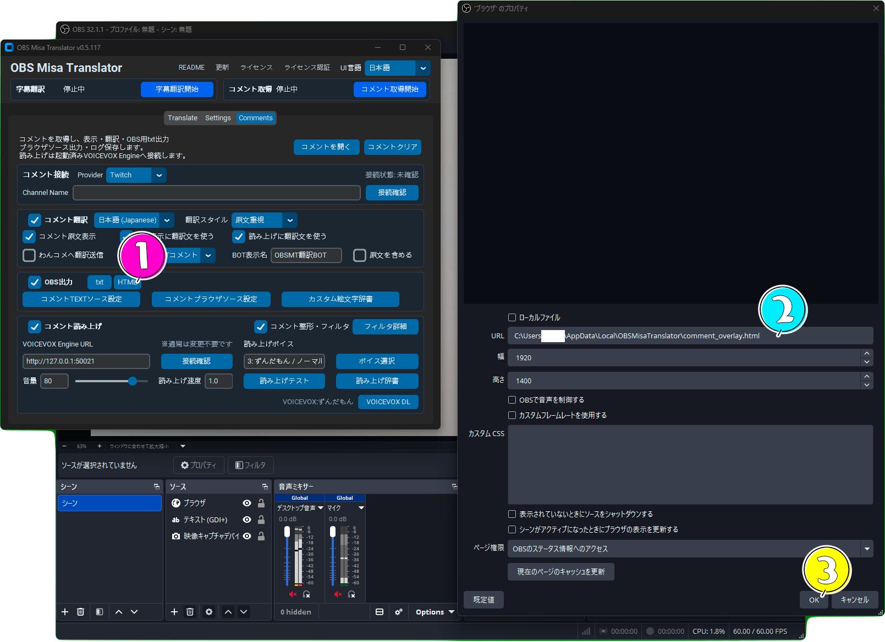
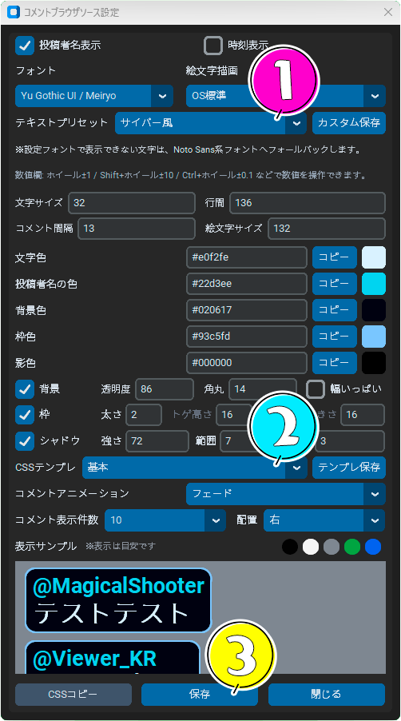

主な機能
faster-whisper による音声認識と、翻訳字幕のOBS出力。
字幕00〜04を個別のBrowser Sourceとして表示。フェード、ポップ、タイプライター風など。
YouTube / Twitch / わんコメ連携を想定したコメント取得・翻訳・表示。
コメント・字幕のフォント、色、背景、枠、影、行間、表示位置を調整。
CUDA環境が利用可能な場合、GPUで高速な文字起こしが可能。
コメント本文の永続保存を避け、リアルタイム表示・翻訳に寄せた設計。
クイックスタートガイド
字幕翻訳設定

② CPU/GPUを選択
③ マイクを選択

② 翻訳先言語を選択
③ 字幕翻訳開始

② OBSでURLペースト
③ OKを押す

② 字幕HTML演出を選択
③ 保存を押す
コメント翻訳設定

② Channel Name / Video ID入力
③ 接続確認を押す

② 翻訳先言語選択
③ コメント取得開始

② URLをペースト
③ OKを押す

② アニメーションを選択
③ 保存を押す
使用ガイド
おすすめ初期設定
- GPU環境あり:
large-v3-turbo + GPU - 軽量環境:
small / medium + CPU - 翻訳先: English
- 字幕HTML演出: Fade または Pop
字幕TEXTソース設定
- 自動消去秒数
- 1行文字数
- 最大行数
- 途中送信
OBS Text Source向けの字幕整形設定です。
字幕ブラウザソース設定
- フォント / サイズ
- 文字色 / 背景色 / 枠色
- 影 / 縁取り / 角丸
- CSSテンプレ / アニメーション
Browser Source字幕の見た目を調整できます。
ブラックリスト / セーフリスト
- ブラックリスト: 除外したい語句
- セーフリスト: 除外を上書きして通す語句
セーフリストはブラックリストより優先されます。
音声キャリブレーション
- マイクの環境音と話し声を測定します。
- 音声認識の開始しきい値の参考値を確認できます。
- マイク入力が小さすぎる、または反応しすぎる場合の調整に役立ちます。
コメントブラウザソース設定
- コメント表示のフォント、色、背景、枠、影を調整できます。
- コメント表示件数や左右配置、アニメーションを変更できます。
- OBS Browser Source向けの見た目を設定する画面です。
コメントTEXTソース設定
- OBS Text Source向けのコメント表示形式を調整できます。
- 表示件数、1行文字数、最大行数を設定できます。
- 左右配置はOBS側のテキストソース設定で調整してください。
コメント整形・フィルタ詳細
- URL、長文、空白コメントなどの扱いを設定できます。
- 読み上げ最大文字数やOBS表示最大文字数を調整できます。
- スパムや不要なコメントを減らしたい場合に使用します。
カスタム絵文字辞書
- YouTube絵文字などのショートコードを登録できます。
- 表示する文字列や画像URLを指定できます。
- コメント表示を配信向けに整えたい場合に便利です。
読み上げ辞書
- コメント読み上げ時の読み方を登録できます。
- 略語、ネットスラング、固有名詞の読みを調整できます。
- VOICEVOX読み上げを自然にしたい場合に使用します。
システム要件
最低動作環境
- Windows 10 / 11
- 64bit 環境
- 4コア以上のCPU推奨
- メモリ 8GB以上
推奨環境
- NVIDIA GPU
- CUDA対応環境
- メモリ 16GB以上
- SSD ストレージ
インストール / Installation
1. Downloader を起動
- Booth またはitch.ioから
OBS Misa Translator Downloader.exeをダウンロードします。 - Downloader を起動します。
- 「Download / Install」を押します。
Downloader は最新版を自動取得し、installer を起動します。
2. Installer を実行
- ライセンスを確認します。
- インストール先を選択します。
- Install を押します。
初回起動時は Windows Defender の確認が出る場合があります。
3. OBS Misa Translator を起動
- マイクを選択
- Whisperモデルを選択
- 翻訳先言語を選択
- 「字幕翻訳開始」を押します
更新はヘッダーの「更新」ボタンから行えます。
音声認識の頭の良さ（Whisper モデル管理）
OBS Misa Translator は faster-whisper モデルを利用します。
Whisperは翻訳システムの一種で、モデルとは頭の良さのようなものです。
- small: 軽量
- medium: バランス型
- large-v3-turbo: 高品質
モデル管理画面から不要モデルを削除できます。
Whisper モデルは数GBになる場合があります。
OBS設定
Text Source
OBSのテキストソースで、各 obs_subtitle_00.txt〜obs_subtitle_04.txt を読み込みます。
- 字幕00: 認識結果
- 字幕01: 翻訳結果
- 字幕02〜04: 追加翻訳字幕
Browser Source
字幕HTMLを使う場合は、OBS Browser Sourceに専用HTMLを登録します。
subtitle_overlay_00.html
subtitle_overlay_01.html
subtitle_overlay_02.html
subtitle_overlay_03.html
subtitle_overlay_04.htmlアップデート
OBS Misa Translator は自動更新確認に対応しています。
- 起動時に最新版確認
- ヘッダー「更新」ボタン通知
- installer自動ダウンロード
- SHA256検証対応
データ保存方針
- コメント本文ログ
- 投稿者ごとの長期履歴
- 外部DB/クラウド保存
- OBS表示用txt/js/html
- 配信中メモリ
- 本文を含まない集計データ
エディション
| 機能 | FREE | FULL |
|---|---|---|
| 処理 | CPUのみ | CPU / GPU |
| 字幕 | 字幕00 / 01 | 字幕00〜04 |
| 翻訳言語 | 英語中心 | 多言語 |
| コメント翻訳 | 利用可能 | 利用可能 |
| わんコメ連携 | なし | 利用可能 |
| HTML演出 | 基本演出 | 全演出 / 詳細CSS |
FAQ / よくある質問
Q. 初回起動が遅いです
初回は Whisper モデルの準備やフォント展開を行うため、通常より時間がかかる場合があります。
Q. GPUが使われません
CUDA / cuDNN / NVIDIA Driver が正しく導入されているか確認してください。
Q. Windows Defender が警告を出します
初回配布直後のアプリでは SmartScreen 警告が表示される場合があります。
Q. コメントが取得できません
配信URL、YouTube Live状態、コメント取得設定を確認してください。
更新履歴
v0.5.117
- MIC LEVELメーター追加
- WhisperモデルDL進捗表示追加
- モデルDL失敗/未完了判定改善
- コメント接続UI整理
- コメント表示件数設定復活
- コメント左右配置切替追加
- 対応言語を28言語へ拡張
- 各種UI改善と不具合修正
注意事項
- GPU利用にはCUDA/cuDNN/ctranslate2周辺の環境が必要です。
- OpenAI APIキーを設定する場合、画面共有やログ貼り付けで漏洩しないよう注意してください。
- コメント取得元や配信プラットフォームの規約を確認して利用してください。
コメント機能
コメント取得・翻訳・OBS表示を行います。コメント本文や投稿者名を外部に永続保存しない方針へ寄せています。
わんコメ連携案